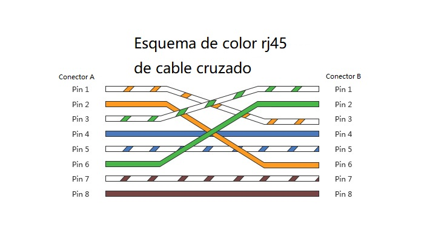

Tipos de Cables y sus Usos en la Red
Cable Directo

Un cable directo se utiliza para conectar:
- Un ordenador a un switch o hub
- Un router a un switch o hub
Ambos extremos del cable siguen la misma norma (T568A o T568B).
Cable Cruzado
Un cable cruzado se utiliza para conectar:
- Dos ordenadores directamente
- Dos switches
- Un router a otro router
Un extremo sigue la norma T568A y el otro la T568B, intercambiando los pares de transmisión y recepción.
Nota: Los equipos modernos suelen tener detección automática (Auto MDI-X), lo que hace menos necesario el uso de cables cruzados.